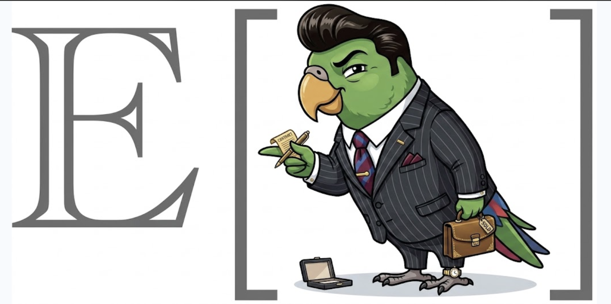

A CRM even Lionel Hutz can operate
Niles gives an agent a safe command layer for clients, conversations, promises, intake forms, and follow-up—without turning relationship history into an opaque SaaS database.
01 What Niles does
Lionel Hutz has prospects, clients, calls, promises, and a recurring problem: none of them stay connected. Niles turns those fragments into an auditable workflow.
Remember relationships
Contacts, notes, traits, tags, and source history remain searchable.
Remember promises
Next steps become assigned, dated tasks rather than buried sentences.
Invite information
EDSL surveys support debriefs, human intake, and status requests.
Keep control
Responses and recommendations remain quarantined until reviewed.
02 The base data model
| Object | Hutz Law example | Behavior |
|---|---|---|
| Contact | Burns Industries | Identity, company, cadence, traits, tags |
| Note | Liability call | Timestamped interaction history |
| Task | Send engagement outline | Assigned, dated, stateful promise |
| Survey | Client debrief | Questions with deterministic routes |
| Form | EP intake registration | Remote metadata recorded locally |
| Submission | New prospect answers | Quarantined until review |
| Recommendation | Proposed follow-up | Becomes a task only when accepted |
Every mutation appends an event. The local index is rebuildable, making history, undo, integrity checks, and cloning share one source of truth.
03 Start the Hutz Law CRM
From an empty project directory, initialize Niles:
niles initThen ask for state-aware operating guidance:
niles agent next04 Add clients and the people around them
Add Burns Industries as a prospective account:
niles contact add "Burns Industries" \
--tag prospect \
--trait priority=1 \
--cadence-days 14Add Smithers as the person Lionel speaks with:
niles contact add "Waylon Smithers" \
--company "Burns Industries" \
--role "Executive Assistant" \
--email smithers@burns.example \
--tag decision-makerInspect the account by its stable slug:
niles contact show burns-industries05 Log an interaction, then debrief it
Record what happened on the call:
niles note add burns-industries \
"Discussed workplace liability. Smithers requested an engagement outline." \
--kind callPreview a structured debrief before routing any answers:
niles survey run debrief \
--contact burns-industries \
--answers debrief-answers.json \
--dry-runApply the same deterministic routes after reviewing the preview:
niles survey run debrief \
--contact burns-industries \
--answers debrief-answers.json06 Turn promises into work
Create the promised follow-up:
niles task add burns-industries \
"Send engagement outline" \
--due 2026-09-10 \
--assign lionel \
--tag proposalSee Lionel’s open promises:
niles task list --assignee lionelClose the loop when the outline is sent:
niles task done task_outline --note "Sent to Smithers"07 Surface neglect before clients disappear
List relationships that have exceeded their cadence:
niles contact list --staleCreate a shareable local status view:
niles report status --html hutz-status.html08 Find new clients with human intake
Niles · local
- Exports surveys
- Manages paths
- Registers metadata
- Imports to quarantine
EP · network
- Publishes forms
- Hosts respondents
- Retrieves responses
- Owns credentials
Export the intake survey locally:
niles intake export intake-basicRun the returned data.publish_command with EP. Then register its output:
niles intake register intake-basicRun the returned data.pull_command, then import responses:
niles intake import form_intakeNothing changes a relationship until Lionel accepts, merges, or rejects:
niles intake review sub_mcbain --accept09 Ask a known client what changed
Export a debrief for Burns Industries:
niles status-request export client-debriefAfter EP publishes it, connect the registration to Burns and Smithers:
niles status-request register client-debrief \
--contact burns-industries \
--recipient smithers@burns.exampleAfter running the returned pull command, import the local result:
niles status-request import form_statusAccept the routed update only after inspecting it:
niles status-request review sub_status --accept10 Ask a model for the next relationship action
Package prospect context as an EDSL job:
niles recommend export next-steps --tag prospectRun data.run_command with EP, then import the result:
niles recommend import --name next-stepsOnly acceptance turns the proposal into a task:
niles recommend accept rec_followup \
--assign lionel \
--due 2026-09-1511 Search, inspect, and undo
Search across names, notes, traits, tags, and tasks:
niles search "workplace liability"Inspect the relationship’s append-only history:
niles history --contact burns-industries --limit 20Verify that durable history and its projection agree:
niles fsck12 Sync and restore without bookkeeping
Each sync refreshes a human-readable CRM view in the repository README while preserving content outside Niles' marked section. Preview exactly what Niles would commit and push:
niles sync --dry-runCommit durable CRM state and push it:
niles sync --message "Update Hutz Law CRM"Create a portable archive when Git is not the transport:
niles export hutz-law.zip13 Command map
| Goal | Commands |
|---|---|
| Orient | agent next, status |
| Relationships | contact add|show|list|update|status|tag|archive|merge |
| Work | note add|list, task add|list|update|done|reassign|cancel|suggest |
| Surveys | survey list|show|copy|run|export-edsl |
| Human forms | intake export|register|import|status|review|close, status-request export|register|import|status|review |
| Model proposals | recommend export|import|review|accept|reject |
| Audit and move | search, history, undo, fsck, sync, export, import |